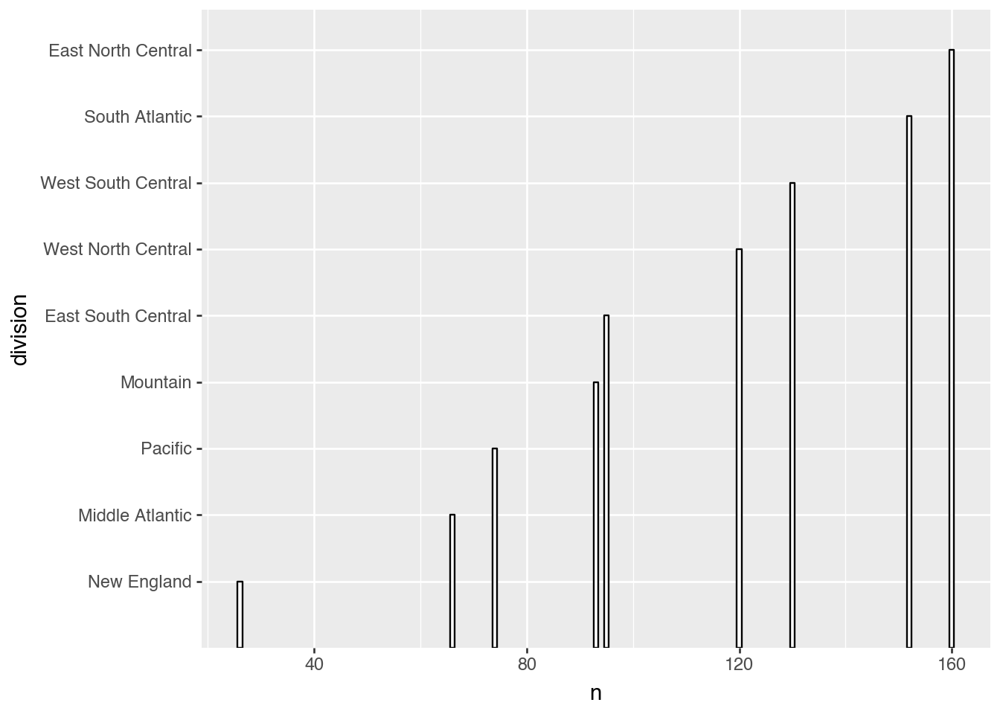

In the previous chapter, we learned how to build data visualizations using the grammar of graphics and the plotnine package. We saw how these visual techniques allow us to quickly understand the shape and structure of two datasets that have a relatively small number of rows. In order to go farther, we need to be able to modify data directly within Python. The modified dataset can then be used to create new plots, summary tables, or as the input to modeling techniques. For example, we might want to take a subset of the rows of our data to focus on a specific part of the dataset. Or, we might want to create summaries of some of the columns according to different grouping variables defined in the data.
We will use methods called data operations to manipulate datasets in Python. All of the data operations shown in this chapter come from the pandas package [1]. Each operation takes as an input one DataFrame—the object type introduced in Chapter 1 that is used to represents a dataset—and returns a new DataFrame. There are many operations available in pandas, though most are a minor variant or specific application of another operation. In this chapter we will see seven of them, all of which are related to selecting, arranging, and creating rows and columns. First, we will see how to select a subset of rows from the original dataset using boolean indexing and .iloc[]. Then, we use column selection to select a subset of columns from the original dataset. Next, we use the .sort_values() method to sort the rows of our dataset and .assign() to add new columns to the data. Finally, we combine groups of the dataset using the .groupby() method along with aggregation functions. Along with these operations, we will also introduce additional helper functions that assist in making use of their different applications. We will also highlight how each of these operations can be chained together to create new data visualizations.
The set of data operations all have a similar syntax. They typically start with the original DataFrame and the output is always a new DataFrame. Additional options control how the function modifies the data. Because the operations always start with a dataset and return a dataset, we can use method chaining (with the dot operator) to pass a dataset from one operation to the next in order to string together a sequence of data transformations. Importantly, operations never modify the original data by default. They operate instead on a copy of the data. To save the changes, it is necessary to make an explicit name for the new dataset and assign it with the equals operator. Often, though, we will directly chain the resulting transformed version of the data directly into the ggplot command, without the need to make a newly named version of the data.
3.2 Choosing Rows
It is often useful to take a subset of the rows of an existing dataset. For example, we might want to build a model on a certain sub-population or highlight a particular part of the data in a plot. In the previous chapter we looked at the 30 largest CBSA regions. This dataset was created by taking a subset of the larger, entire set of CBSA regions. A straightforward way to take a subset of rows is to indicate the specific row numbers that we want to extract. In order to select rows by row numbers, we use the .iloc[] indexer, followed by the numbers of the rows we want. The code chunk below shows an example of using the iloc indexer to take the second, fifth, and seventh rows of the data (remembering that Python uses 0-based indexing).
cbsa.iloc[[1, 4, 6]]
name
geoid
quad
lon
lat
pop
density
age_median
hh_income_median
percent_own
rent_1br_median
rent_perc_income
division
1
Los Angeles
31080
W
-118.148722
34.219406
13.202558
1040.647281
41.6
81652
51.3
1468
33.6
Pacific
4
Houston
26420
S
-95.401574
29.787083
7.048954
316.543514
41.0
72551
65.1
997
30.0
West South Central
6
Philadelphia
37980
NE
-75.302635
39.905213
6.215222
506.068130
42.6
79070
71.1
1083
30.0
Middle Atlantic
As mentioned above, the code here does not change the dataset cbsa itself. It still has all 916 rows even after running the code above. If we want to create a new dataset with just these three regions, we need to explicitly name and assign it. For example, below is an example of how we would create a dataset of the first five cities. We have named the new dataset cbsa_first_five.
cbsa_first_five = cbsa.iloc[0:5]
The most common application of the .iloc[] indexer is to take the first set of rows in a dataset. This can be done, for example, after arranging the rows by another variable, something we will see later in the chapter. There are also convenient methods for selecting the first or last rows: .head() and .tail(). For example, in the code below, we show another way to select the first five rows of the dataset.
cbsa.head(5)
We can also take a subset of the rows of a dataset by selecting rows based on conditions about the various data columns. To do this we use boolean indexing or the .query() method, which accepts a statement about variables in the dataset. We can write the condition directly in terms of the variable names used in the dataset. Only rows where the statements are true will be returned. For example, below is an example of how we use boolean indexing to select regions that have more than 5 million people living in them.
cbsa[cbsa['pop'] >5]
name
geoid
quad
lon
lat
pop
density
age_median
hh_income_median
percent_own
rent_1br_median
rent_perc_income
division
0
New York
35620
NE
-74.101056
40.768770
20.011812
1051.306467
42.9
86445
55.3
1430
31.0
Middle Atlantic
1
Los Angeles
31080
W
-118.148722
34.219406
13.202558
1040.647281
41.6
81652
51.3
1468
33.6
Pacific
2
Chicago
16980
NC
-87.958820
41.700605
9.607711
508.629406
41.9
78790
68.9
1060
29.0
East North Central
3
Dallas
19100
S
-96.970508
32.849480
7.543340
323.181404
41.3
76916
64.1
1106
29.1
West South Central
4
Houston
26420
S
-95.401574
29.787083
7.048954
316.543514
41.0
72551
65.1
997
30.0
West South Central
5
Washington
47900
S
-77.513075
38.812484
6.332069
363.732689
42.4
111252
67.4
1601
28.8
South Atlantic
6
Philadelphia
37980
NE
-75.302635
39.905213
6.215222
506.068130
42.6
79070
71.1
1083
30.0
Middle Atlantic
7
Miami
33100
S
-80.506307
26.155369
6.105897
430.103162
43.9
62870
60.8
1230
36.8
South Atlantic
8
Atlanta
12060
S
-84.399567
33.691787
6.026734
263.275821
41.9
75267
67.3
1181
30.3
South Atlantic
Because population is given in millions of people, we filtered based on pop being greater than 5. The output dataset has only 9 rows, compared to the 916 in the original data. Other comparisons can be done with <, >= and <=. There is also a special method called .between() that is often useful. For example, below are all of the regions that have between 1 and 2 million people living in them.
cbsa[cbsa['pop'].between(1, 2)]
name
geoid
quad
lon
lat
pop
density
age_median
hh_income_median
percent_own
rent_1br_median
rent_perc_income
division
35
San Jose
41940
W
-121.372676
36.908496
1.995351
286.417670
41.4
138370
58.5
2227
27.8
Pacific
36
Nashville
34980
S
-86.645966
36.118950
1.960999
131.347255
40.6
72537
68.7
1083
29.1
East South Central
37
Virginia Beach
47260
S
-76.542499
36.785028
1.791198
183.098156
40.0
71612
64.5
998
30.7
South Atlantic
38
Providence
39300
NE
-71.400290
41.718250
1.668019
381.965971
43.0
74422
66.5
830
29.0
New England
39
Jacksonville
27260
S
-81.791535
30.236294
1.581680
178.083158
41.6
66664
67.3
950
30.7
South Atlantic
40
Milwaukee
33340
NC
-88.172713
43.176122
1.571784
407.097337
41.7
67448
64.2
809
28.6
East North Central
41
Oklahoma City
36420
S
-97.505031
35.428987
1.412874
97.737719
40.3
63351
66.4
748
28.0
West South Central
42
Raleigh
39580
S
-78.461010
35.756718
1.391801
250.282432
41.8
83581
69.6
1104
28.1
South Atlantic
43
Memphis
32820
S
-89.869496
35.023319
1.335291
109.877481
42.1
56926
62.2
826
31.2
East South Central
44
Richmond
40060
S
-77.446702
37.412085
1.303212
112.159801
42.2
74592
68.7
1035
29.9
South Atlantic
45
Louisville/Jefferson County
31140
S
-85.681818
38.303038
1.279554
150.206269
42.1
64533
70.2
766
27.2
East South Central
46
New Orleans
35380
S
-89.955883
29.924412
1.269037
101.673175
42.1
57656
65.7
887
33.5
West South Central
47
Salt Lake City
41620
W
-113.011235
40.471039
1.244671
59.447488
38.9
82506
72.9
1038
28.4
Mountain
48
Hartford
25540
NE
-72.577300
41.734217
1.213324
302.037628
43.7
82359
70.7
982
30.5
New England
49
Buffalo
15380
NE
-78.736788
42.909972
1.162523
283.478105
42.5
62282
70.7
714
29.5
Middle Atlantic
50
Birmingham
13820
S
-86.729411
33.402220
1.109895
93.840306
41.9
62873
72.5
871
29.4
East South Central
51
Rochester
40380
NE
-77.507198
42.965737
1.088373
125.643564
42.9
65812
71.3
806
30.6
Middle Atlantic
52
Grand Rapids
24340
NC
-85.439269
43.072071
1.081665
152.144573
40.4
70347
77.6
816
29.0
East North Central
53
Tucson
46060
W
-111.789247
32.099121
1.035063
43.455454
40.4
59215
66.3
766
30.6
Mountain
55
Tulsa
46140
S
-96.164839
36.249229
1.009982
60.377114
41.5
60866
67.7
734
27.0
West South Central
56
Fresno
23420
W
-119.653393
36.758521
1.003150
64.453980
39.8
61276
54.5
846
32.5
Pacific
Sometimes we want to filter based on a character variable in order to select a set of rows based on a specified set of categories. To do this, we can use the .isin() method to select specific categories that we want selected in the output. Below we show an example of selecting only regions in the Northeast (NE) and South (S) quadrants.
cbsa[cbsa['quad'].isin(['NE', 'S'])]
name
geoid
quad
lon
lat
pop
density
age_median
hh_income_median
percent_own
rent_1br_median
rent_perc_income
division
0
New York
35620
NE
-74.101056
40.768770
20.011812
1051.306467
42.9
86445
55.3
1430
31.0
Middle Atlantic
3
Dallas
19100
S
-96.970508
32.849480
7.543340
323.181404
41.3
76916
64.1
1106
29.1
West South Central
4
Houston
26420
S
-95.401574
29.787083
7.048954
316.543514
41.0
72551
65.1
997
30.0
West South Central
5
Washington
47900
S
-77.513075
38.812484
6.332069
363.732689
42.4
111252
67.4
1601
28.8
South Atlantic
6
Philadelphia
37980
NE
-75.302635
39.905213
6.215222
506.068130
42.6
79070
71.1
1083
30.0
Middle Atlantic
...
...
...
...
...
...
...
...
...
...
...
...
...
...
927
Sweetwater
45020
S
-100.405986
32.303445
0.014727
6.220819
41.2
44700
62.6
577
24.8
West South Central
928
Pecos
37780
S
-103.669712
31.430030
0.014667
1.705080
39.1
53448
74.7
818
27.4
West South Central
929
Zapata
49820
S
-99.168533
27.000573
0.013945
5.081383
41.4
34406
77.1
321
34.6
West South Central
932
Vernon
46900
S
-99.240853
34.080611
0.012887
5.086411
41.5
45262
62.0
503
22.0
West South Central
933
Lamesa
29500
S
-101.947637
32.742488
0.012371
5.291467
41.1
42778
71.5
611
34.5
West South Central
469 rows × 13 columns
As mentioned in the introduction, we can chain together multiple operations to produce more complex logic. For example, consider finding all of the regions with more than 1 million people that are in the Northeast quadrant. We can do this by applying multiple boolean conditions, as in the example below. We can combine multiple conditions using the & (and) and | (or) operators, making sure to use parentheses around each condition.
The results now include only 8 regions. We can use all of these different subsets to create new visualizations, models, and summaries. Let’s now see how we can use data subsets to create new and interesting types of data visualizations.
3.3 Data and Layers
We know that we could use our newly created subsets of data with plotnine to create visualizations such as those in the previous chapter on different parts of a larger dataset. It is also possible to create new types of visualizations that were previously inaccessible. These will let us understand how a subset of the data relates to the larger collection of data. To start, we will create a dataset that consists only of those regions that have more than 2 million people living in them in order to understand the relationships between larger cities. We store the data in an object called cbsa_large.
cbsa_large = cbsa[cbsa['pop'] >2]cbsa_large
name
geoid
quad
lon
lat
pop
density
age_median
hh_income_median
percent_own
rent_1br_median
rent_perc_income
division
0
New York
35620
NE
-74.101056
40.768770
20.011812
1051.306467
42.9
86445
55.3
1430
31.0
Middle Atlantic
1
Los Angeles
31080
W
-118.148722
34.219406
13.202558
1040.647281
41.6
81652
51.3
1468
33.6
Pacific
2
Chicago
16980
NC
-87.958820
41.700605
9.607711
508.629406
41.9
78790
68.9
1060
29.0
East North Central
3
Dallas
19100
S
-96.970508
32.849480
7.543340
323.181404
41.3
76916
64.1
1106
29.1
West South Central
4
Houston
26420
S
-95.401574
29.787083
7.048954
316.543514
41.0
72551
65.1
997
30.0
West South Central
5
Washington
47900
S
-77.513075
38.812484
6.332069
363.732689
42.4
111252
67.4
1601
28.8
South Atlantic
6
Philadelphia
37980
NE
-75.302635
39.905213
6.215222
506.068130
42.6
79070
71.1
1083
30.0
Middle Atlantic
7
Miami
33100
S
-80.506307
26.155369
6.105897
430.103162
43.9
62870
60.8
1230
36.8
South Atlantic
8
Atlanta
12060
S
-84.399567
33.691787
6.026734
263.275821
41.9
75267
67.3
1181
30.3
South Atlantic
9
Boston
14460
NE
-71.099912
42.555194
4.912030
517.827702
42.2
99039
66.4
1390
29.5
New England
10
Phoenix
38060
W
-112.069027
33.186173
4.787811
126.558955
40.7
72211
66.5
1065
29.3
Mountain
11
San Francisco
41860
W
-122.166182
37.780765
4.725584
712.992772
41.9
118547
58.4
1940
28.3
Pacific
12
Riverside
40140
W
-116.127488
34.549836
4.580402
64.511974
40.2
73424
65.2
1120
34.0
Pacific
13
Detroit
19820
NC
-83.233992
42.718660
4.382832
421.567420
42.9
66878
73.1
811
29.4
East North Central
14
Seattle
42660
W
-121.853072
47.554512
3.971125
256.189989
40.6
97675
64.7
1478
29.1
Pacific
15
Minneapolis
33460
NC
-93.273933
45.101345
3.659156
188.297448
41.6
87397
75.0
1035
28.5
West North Central
16
San Diego
41740
W
-116.734692
33.034088
3.296317
298.781488
39.8
88240
55.7
1518
33.4
Pacific
17
Tampa
45300
S
-82.405645
28.153011
3.146074
452.790117
42.8
61121
67.3
1045
32.1
South Atlantic
18
Denver
19740
W
-104.896367
39.434353
2.936665
135.070927
40.4
88512
68.2
1340
30.4
Mountain
19
Baltimore
12580
S
-76.579833
39.338100
2.837237
404.661335
42.4
87513
70.6
1132
30.0
South Atlantic
20
St. Louis
41180
NC
-90.350830
38.734976
2.815627
134.615515
42.2
69635
73.4
778
28.1
West North Central
21
Orlando
36740
S
-81.361852
28.433502
2.632721
253.043039
41.0
65086
63.5
1156
33.0
South Atlantic
22
Charlotte
16740
S
-80.795443
35.167416
2.625282
177.393426
41.8
69559
68.6
1074
28.1
South Atlantic
23
San Antonio
41700
S
-98.601799
29.428308
2.529453
132.337510
40.0
65355
66.7
936
30.1
West South Central
24
Portland
38900
W
-122.479832
45.597144
2.493429
141.406821
41.2
82901
66.1
1262
30.2
Pacific
25
Sacramento
40900
W
-120.999752
38.781108
2.379368
173.268846
41.5
81264
62.7
1156
32.1
Pacific
26
Pittsburgh
38300
NE
-79.830762
40.437868
2.366544
171.198592
43.3
65894
74.9
743
27.1
Middle Atlantic
27
Cincinnati
17140
NC
-84.480196
39.100073
2.244329
187.276368
41.7
70308
71.2
714
27.3
East North Central
28
Austin
12420
S
-97.654303
30.261635
2.234300
201.447732
39.6
85398
64.0
1216
28.8
West South Central
29
Las Vegas
29820
W
-115.013625
36.213907
2.231147
106.878725
41.0
64210
57.1
1004
31.8
Mountain
30
Kansas City
28140
NC
-94.445801
38.934698
2.176124
114.046901
41.4
73299
69.4
905
27.4
West North Central
31
Columbus
18140
NC
-82.835789
39.967336
2.122480
169.140160
40.6
71020
65.2
882
26.9
East North Central
33
Indianapolis
26900
NC
-86.206780
39.746760
2.089990
186.089808
41.2
67330
70.0
832
28.7
East North Central
34
Cleveland
17460
NC
-81.685431
41.375244
2.084462
399.998911
43.4
61320
68.9
721
28.3
East North Central
As we saw in the previous chapter, we can create a scatter plot of the median rental price for a 1 bedroom apartment and the median household income using the following block of code.
One of the core ideas behind the grammar of graphics is that complex visualizations can be constructed by layering relatively simple elements on top of one another. What if we wanted to put together two layers where one layer uses the cbsa dataset and the other uses cbsa_large? To do this, we can override the default dataset in any geometry layer with the option data =. This will use a different dataset within a particular layer. For example, the code below would produce two sets of points. The first layer (second line of the code) would include all of the regions and the second layer (third line) would only have data from the set of the largest regions.
The resulting plot, however, would not look any different than it would if we were just to plot all of the cities together. The second layer of points would sit unassumingly on top of the rest of the data, with no way of seeing that the largest cities have two sets of black points plotted on top of one another. To rectify this, we can color each layer a different color in order to distinguish them from one another. We will do this by highlighting the largest cities in navy blue, while making the rest of the points a light grey. This plot can be further built up by showing the names of just the rows of the largest cities (including all of the cities would take up far too much space). These changes are shown in the code below.
Plot of the core-based statistical areas in the United States, showing the median price to rent a one-bedroom apartment and the median household income as reported by the 2021 American community survey. Here, regions with greater than two million residents are highlighted in navy and their short names are added as labels.
The output of our new plot shows both the largest regions and how they relate to the full set of regions. In general, there is a positive relationship between household income and median apartment rent. This relationship is not a perfect line, though, with some cities appearing relatively more or less affordable, at least for a household with a median income renting a one-bedroom apartment. Also, the largest regions tend to be among the most expensive regions. However, there are smaller regions in the upper right-hand corner of the plot that appear close to the largest cities.
Stepping back from the data itself, we see here already how a relatively small set of commands can be put together in different ways to build a variety of plots. Already, we are making further progress towards building informative and layered graphics with our dataset.
3.4 Selecting Columns
Now that we have seen how to select a subset of the rows in a dataset, another step would be to select a subset of the columns. To do this, we will make use of column selection with square brackets or the .loc[] indexer. We pass it the names of the variables we want to keep in the output dataset, in the (possibly new) order that we want the columns to be arranged in. Here, for example, is a new version of the cbsa dataset containing only the name of the region, the population, the longitude and latitude, and the household median income.
cbsa[['name', 'pop', 'lon', 'hh_income_median']]
name
pop
lon
hh_income_median
0
New York
20.011812
-74.101056
86445
1
Los Angeles
13.202558
-118.148722
81652
2
Chicago
9.607711
-87.958820
78790
3
Dallas
7.543340
-96.970508
76916
4
Houston
7.048954
-95.401574
72551
...
...
...
...
...
928
Pecos
0.014667
-103.669712
53448
929
Zapata
0.013945
-99.168533
34406
931
Craig
0.013240
-108.207523
58583
932
Vernon
0.012887
-99.240853
45262
933
Lamesa
0.012371
-101.947637
42778
916 rows × 4 columns
We will find that column selection is not as immediately useful as the row filtering when working interactively in Python. For many tasks, having extra variables around does not effect data visualizations or data models. As we have seen already in the grammar of graphics, the plot always shows all of the available rows, but only uses those columns in the data that we have explicitly mapped to aesthetics. Selecting columns, though, can be useful for displaying results. This is particularly the case when writing code that will be printed—the code in this book is a great example. As we saw above, the household median income column was cut off in the original output but is now visible in the selected dataset version. Removing and reordering unneeded columns will be useful throughout this book when we want to show columns that would otherwise be hidden given the limited width of the page. Finally, removing columns can be useful as a first step in the more complex data reorganization tasks shown in the following chapter. We will discuss these strategies more as the need arises in the following chapters.
3.5 Arranging Rows
The indexing and boolean filtering operations determine a subset of rows to keep from the original dataset. The .sort_values() method keeps all of the original data but re-orders its rows. It works by giving it one or more variable names. The method sorts the data by the first variable from smallest to largest (or alphabetically for character variables). In the case of ties, the second variable, if given, is used. More variables can be given to further break additional ties. If any ties are not broken by the given variables, the rows in question will retain the order given in the original input dataset. The following block of code provides an example in which we order the dataset first by division and then by pop. We will use column selection to display the columns of the data that are used in the arranging of the rows.
In the new dataset all of the regions in the “East North Central” division come up first as a result of this division being first alphabetically. Within each group, the items are sorted from the lowest to highest population. Any ordering can be reversed (i.e., from the highest to the lowest value) by setting the ascending parameter to False. Below is an example that repeats the sorting above, but this time in descending order of population.
In the result here, “Chicago” has been placed at the top of the dataset, followed by “Detroit” and “Cincinnati”. These are the three largest regions in the “East North Central” division of the United States. A particularly useful application of this kind of sorting with .sort_values() is to pair it with .head() or .iloc[]. Below, for example, is the code to select the 30 regions in our dataset that have the largest population.
cbsa.sort_values('pop', ascending=False).head(30)
This is the code that we used to create the smaller version of the cbsa dataset that was used throughout Chapter 2. As we can see, putting these operations together offers a powerful way to explore our data.
3.6 Group By and Aggregation
The two operations, aggregation and .groupby(), are often used in sequence to create interesting new summarized versions of a dataset. We will start with aggregation operations. These functions collapse the rows of a DataFrame using summary functions. To apply aggregation requires specifying exactly how the data should be summarized and in terms of which columns the summary should be done.
As with every operation, we start by taking a dataset and applying an aggregation method. We need to specify which aggregation function to use, such as .mean(), .min(), .max(), .sum(), or .count(). An example will help illustrate how this works. The code below computes the mean (in other words, average) population in each of the CBSA regions.
cbsa['pop'].mean()
np.float64(0.3379417838427948)
From the output, we see that the average CBSA region has around 0.33 million residents. We are not constrained to computing just one summary at once, however. We can compute multiple summaries using the .agg() method. To do this, we can pass a dictionary specifying which aggregation functions to apply to which columns. For example, here we compute the mean value of the household median income, the sum of the population across all regions, the maximum median age, and a total count of the number of rows.
Summarizing the dataset to a single set of values can be useful for understanding the general trends in a dataset or highlighting outliers. However, the real power of aggregation comes when we pair it with the .groupby() method. This will allow us to produce summaries within one or more grouping variables in our dataset.
The .groupby() method is a special kind of data operation. The method takes one or more names of variables in the dataset and creates a special grouped object that allows subsequent operations to be applied separately for each group. It makes no direct, visible changes to the dataset and is used only to change the way that other data operations treat the dataset. For example, when we use the .groupby() method, subsequent uses of aggregation functions will produce a summary that describes the properties of variables within the variable used for grouping. The variable name(s) placed inside of the .groupby() method indicate which variable(s) should be used for the groups. For example, we recompute the summary from the previous code block, but this time group the data by the division.
We see that the output dataset contains a row for each value of the grouping variable (division) as well as the newly created summary variables. The summarized variable names are the same as the non-grouped version after renaming. However, the output dataset now contains nine rows, one for each division. The output here is now a full dataset that we could try to visualize, in order to understand variations in these economic metrics across larger areas of the United States.
3.7 Geometries for Summaries
We can use summarized datasets to produce new data visualizations. For example, consider summarizing the household median income and average age for each division of the country. We can take this data and construct a scatter plot that shows the average median income and average median age for each division, along with informative labels. Code to produce the visualization is given below.
Plot showing the average household median income and average median age based on the geographic division using data from the core-based statistical areas in the as reported by the 2021 American community survey.
Scatter plots are often useful for displaying summarized information. The geom_col geometry introduced in the previous chapter is also useful, particularly when combined with counting operations. If we want to create a bar plot that shows the distribution of the total number of rows associated with each category, we can do this by combining the group by and aggregation functions with a plot that uses geom_col. Below is an example that counts the total number of CBSA regions in each division.
Bar plot showing the number of core-based statistical areas found in each division of the United States.
The white fill color and black border are often a good-looking starting point. Also, as before, making the bars horizontal will make it easier to read the category names when there are a larger number of categories. As mentioned in the previous chapter, it would be nice to arrange the categories in the plot in the order of their counts. We will see how to make this possible in the final two sections.
Figure 3.1: Visual descriptions of the six data verbs intrduced in this chapter.
3.8 Assign
The final core pandas operation that we will look at is the .assign() method. It is used to create a new variable in our dataset based on other variables that are already present. Similar to aggregation functions, this method works by specifying the name of the variable we want to create followed by the code that describes how to construct the variable in terms of the rest of the data.
For an example of using .assign(), consider converting the population of each region from the millions given in the dataset into a new variable that is in terms of hundreds of thousands. This involves multiplying the population variable by 10. In the code below, we use the assign method to create a new variable named pop_100k that is defined as 10 times the pop variable. We will use column selection to highlight the variables that are involved in the calculation.
Notice that there is a new variable named pop_100k. This new variable was added as the last column in the dataset, but we have rearranged the ordering using column selection. We can also modify an existing column in the dataset by using the name of an existing variable, or by direct assignment with the bracket notation. In this case the position of the variable within the DataFrame does not change.
The assign method itself has a relatively straightforward syntax. The main challenge is knowing how to apply and chain together the various transformations that are useful within an analysis. Let’s see some common types of operations that will be useful in subsequent applications.
Many of the uses for creating new variables involve assigning one value when a set of conditions is true and another if the conditions are false. For example, consider creating a new character variable called region_size based on the population of each region. We might classify a region as being “large” if it has more than 7 million people and “small” otherwise. In order to create a variable like this, we need the function np.where(). The np.where() function has three parts: a TRUE/FALSE condition, the value to use when the condition is true, and the value to use when it is false. Below is an example showing the construction of the new variable region_size, where we have selected the relevant variables.
Looking at the first several rows of data, we see that there are five regions classified as large, with all of the others classified as small. This classification can be used just like any other character variable. For example, we could group by it and then see summary statistics broken out by small and large regions. Or, we could build a plot where the small and large regions have different colors.
The np.where() function can be used to produce any number of categories by using it multiple times. Let’s modify our region size variable to now have five categories: “huge” (over 7 million), “large” (2-7 million), and “medium” (between 1-2 million), “small” (0.3 to 1 million), and the remainder “tiny”. There are several different ways to get to the same result. One of the best and easiest to understand is to start by assigning a default value and then changing the value of the new variable in sequence. For example, below is a code block that creates the new categories and then summarizes the data based on the categories. We have replaced the variable name region_size with rs in order to make sure the code fits easily on the page.
In each .assign() step we are telling the method that if the condition is false, set rs equal to itself (using lambda functions to reference the current state of the DataFrame). In other words, if the condition does not hold, do not change the value of the variable. Notice that the .between() method we used with filtering becomes very helpful once again.
We may wonder why we created a “default” value for the variable rs. It would have been one less line of code to set the default value to “tiny” and remove the final assign function. The reason for the approach above is three-fold. First, it’s easier to understand what the code is doing in its current format because each condition (“huge”, “large”, “medium”, “small”, and “tiny”) is explicitly coded. Secondly, it creates a nice check on our code and data. If we find a row of the output that still has the value “default” we will know that there is a problem somewhere. Finally, the code above will more safely handle the issues with missing values, an issue that we will return to in future chapters.
Another reason to create new variables is to handle the formatting of character variables such as quad and division in our cbsa dataset. Pandas has a special data type called a categorical that is specifically designed to handle character variables with a defined set of categories. It is typically not necessary to store data as categorical during most operations, but it can be useful to create a categorical variable just prior to creating a data visualization or model. From the perspective of data analysis, the biggest difference between regular string columns and categorical columns is that a categorical column has a default order of its unique values, called the category order. Creating categorical variables allows us to change the ordering of categories within visualizations and models. As we have seen, these by default are ordered alphabetically for string variables, but will be done in the order specified by the category levels in the case of a categorical variable.
One way to produce a categorical variable with a given order is to first sort the data in the desired order, then create the categorical variable using the unique values in that order. Combining this with the .sort_values() method provides a lot of control over how categories become ordered. In the code below, for example, we recreate the previous bar plot, but this time arranges the categories and then forces the categories to be in the order specified in the data.
division_counts_ordered = (cbsa.groupby('division') .size() .reset_index(name='n') .sort_values('n'))# Create categorical with the order from the sorted datadivision_counts_ordered['division'] = pd.Categorical( division_counts_ordered['division'], categories=division_counts_ordered['division'].tolist(), ordered=True)(ggplot(division_counts_ordered, aes(x='n', y='division')) + geom_col(color='black', fill='white'))

Plot showing the number of core-based statistical areas found in each division of the United States. Here, the categories are ordered by their counts.
The output shows that our plot is now ordered by the number of regions in each division. This can be a much better way of understanding the distribution of a character variable. Notice in the code that we overwrote the variable division rather than creating a new variable. This is a common practice when our modification is changing the data type of a column rather than changing the values themselves, such as in the example above where we converted the division variable from a string into a categorical variable. Other useful functions for manipulating categories in pandas include setting categories manually with pd.Categorical() and various string manipulation methods. We will see these in several of the application chapters when creating plots to better understand our data.
3.9 Extensions
The methods in this chapter provide the primary building blocks for modifying and organizing existing datasets. We will continue to learn new techniques that combine information across datasets (joins) and interchange the relationships between rows and columns (pivots) in Chapter 4. Much of the further power of the techniques shown here come not from new packages, options, and methods, but rather creating complex sequences of the operations we have already seen. Examples of this will be shown throughout the remainder of this book. There are many operations that we have not covered in this chapter that are available in pandas. As mentioned above, we tend to focus on the most commonly used operations in the name of simplicity, though pandas offers many specialized methods for specific use cases. For example, there are various ways to handle missing data, string operations, date/time manipulations, and more. When encountering other code that uses these specialized methods, the pandas documentation is the best source for understanding how they work.
The data operations introduced in this chapter are all grounded in the theory of a field called relational algebra [2]. The theory itself is not particularly enlightening for data analysis work. The details are mostly useful for people designing databases and interfaces. However, the consequences of this theoretical underpinning are important to know. Because pandas is based on these ideas, the concepts presented in this chapter have analogs in many other programming languages and most database systems. For example, the R dplyr library has functionality for modifying data tables in R using the same concepts presented that are presented above (often with the same or similar names) [3]. The same can be said for SQL, a standard query language for databases, and its variants [4]. Many of the names—such as filtering, summarizing, and grouping—used in pandas correspond directly to operations in SQL. These links are important because it means that we can translate concepts shown in this chapter to other situations where we might need to use a different programming language.
References
[1]
McKinney, W and others (2011 ). Pandas: A foundational python library for data analysis and statistics. Python for high performance and scientific computing. Dallas, TX. 14 1–9
[2]
Silberschatz, A, Korth, H F and Sudarshan, S (2011 ). Database system concepts. McGraw-Hill Education
[3]
Wickham, H, Çetinkaya-Rundel, M and Grolemund, G (2023 ). R for Data Science. " O’Reilly Media, Inc."
[4]
Date, C J (1989 ). A Guide to the SQL Standard. Addison-Wesley Longman Publishing Co., Inc.
{kind=link}